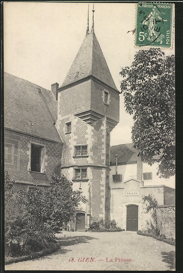
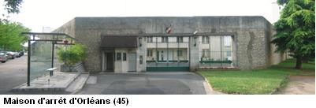
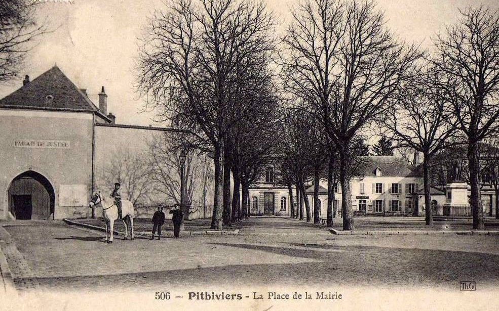

| Département | Images | Ville | Nom | Adresse | Période | Capacité | Histoire du lieu | Nombre d'exécutions |
| Loiret (45) |  |
Gien | Maison d'arrêt | Place du Château | 1823-1926 | Ancien pavillon de chasse royal du XIVe siècle, sur une butte dominant le lit de la Loire, le château de Gien est l'un des premiers châteaux de la Loire. Bâti en 1494 sur ordre d'Anne de Beaujeu, son style annonce clairement celui de la Renaissance. Appartenant au département depuis 1823, le château cumule alors les fonctions de sous-préfecture - aile gauche -, de tribunal - bâtiment principal - et de prison - aile droite. Ce rôle judiciaire lui vaudra une restauration en 1869, cependant, en juin 1940, des bombardements ennemis l'abiment gravement, détruisant notamment la partie prison. Actuellement, le château est un musée régional consacré à l'histoire et la nature. En 2015, il est fermé pour cause de travaux. | Aucune exécution | |
| Loiret (45) | Montargis | Maison d'arrêt | 07, rue Cour Jean Dupont | En service depuis 1792 | 25 places, 8 surveillants (1962) 20 places (2015) |
Ancien cloître des Visitandines. Maison d'arrêt depuis 1930, centre de semi-liberté depuis 2000. | Aucune exécution | |
| Loiret (45) |  |
Orléans | Maison d'arrêt, de justice et de correction | 55, boulevard Guy Marie Riobé | 1896-2014 | 110 places (1962) | En forme d'Y. Prévue pour 72 à 105 détenus, elle en accueille 226 en septembre 2013. Fermée le 18 octobre 2014, ses détenus ont été transférés à la nouvelle prison de Saran. | Aucune exécution. |
| Loiret (45) | Orléans | Prison militaire | 14, rue Eugène-Vignat | Siège du conseil de guerre, fermé en 1926. Servant à nouveau durant la Seconde Guerre Mondiale et après, notamment dans un cadre politique. Remplacée depuis par le palais des sports. | Trois exécutions en 1948. | |||
| Loiret (45) |  |
Pithiviers | Maison d'arrêt | Place Denis Poisson | -1926 | Collée au palais de justice, à proximité immédiate de la mairie. L'entrée de l'ancien tribunal demeure, sans que rien ne l'indique pour autant. Le bâtiment pénitentiaire, détruit, a laissé place à une école maternelle. | Aucune exécution |
{kind=link}
{kind=link}
{kind=link}